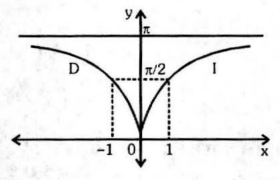
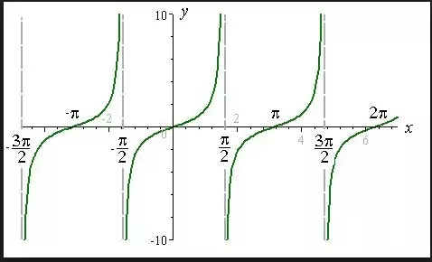
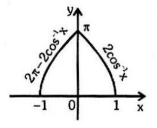

Inverse Trigonometric Identities
Negative Formulas
\[ \sin^{-1}(-x) = -\sin^{-1}(x) \]
\[ \cos^{-1}(-x) = \pi - \cos^{-1}(x) \]
\[ \tan^{-1}(-x) = -\tan^{-1}(x) \]
\[ \cot^{-1}(-x) = \pi - \cot^{-1}(x) \]
\[ \sec^{-1}(-x) = \pi - \sec^{-1}(x) \]
\[ \cosec^{-1}(-x) = -\cosec^{-1}(x) \]
Addition of Two Functions
\[ \sin^{-1}x + \cos^{-1}x = \frac{\pi}{2} \space,\space x \in [-1, 1] \]
\[ \tan^{-1}x + \cot^{-1}x = \frac{\pi}{2} , x \in \mathbb{R} \]
\[ \cosec^{-1}x + \sec^{-1}x = \frac{\pi}{2} \]
Reciprocal Formulas
\[ \sin^{-1}\frac{1}{x} = \cosec^{-1}x \]
\[ \cos^{-1}\frac{1}{x} = \sec^{-1}x \]
\[ \tan^{-1}\frac{1}{x} = \cot^{-1}x, x > 0 \]
Identity Formulas
\[ \sin(\sin^{-1}x) = x, -1 \leq x \leq 1 \]
\[ \cos(\cos^{-1}x) = x, -1 \leq x \leq 1 \]
\[ \tan(\tan^{-1}x) = x, -\infty < x < \infty \]
\[ \cot(\cot^{-1}x) = x, -\infty < x < \infty \]
\[ \sec(\sec^{-1}x) = x, -\infty < x \leq 1 \text{ or } 1 \leq x < \infty \]
\[ \cosec(\cosec^{-1}x) = x, -\infty < x \leq 1 \text{ or } 1 \leq x < \infty \]
Addition of Same functions
\[ \sin^{-1}x + \sin^{-1}y = \sin^{-1}(x\sqrt{1-y^2} + y\sqrt{1-x^2}) \]
\[ \sin^{-1}x - \sin^{-1}y = \sin^{-1}(x\sqrt{1-y^2} - y\sqrt{1-x^2}) \]
\[ \cos^{-1}x + \cos^{-1}y = \cos^{-1}(xy - \sqrt{(1-x^2)(1-y^2)}) \]
\[ \cos^{-1}x - \cos^{-1}y = \cos^{-1}(xy + \sqrt{(1-x^2)(1-y^2)}) \]
\[ \tan^{-1}x + \tan^{-1}y = \tan^{-1}\left(\frac{x+y}{1-xy}\right) \]
\[ \tan^{-1}x - \tan^{-1}y = \tan^{-1}\left(\frac{x-y}{1+xy}\right) \]
Simplified Inverse Trigonometric Functions
| Equation | Conditions | Graph |
|---|---|---|
| \[y = \sin^{-1}\left(\frac{2x}{1 + x^2}\right)\] |
\[2\tan^{-1}x\] \[if \; |x| \leqslant 1\] \[\pi - 2\tan^{-1}x\] \[if \; x > 1\] \[-(\pi + 2\tan^{-1}x)\] \[if \; x < -1\] |
|
| \[y=cos^{-1}(\frac{1-x^2}{1+x^2})\] |
\[2\tan^{-1}x\] \[if \; x \geqslant 0\] \[\pi - 2\tan^{-1}x\] \[if \; x < 0\] |
 |
| \[y=tan^{-1}(\frac{2x}{1-x^2})\] |
\[2\tan^{-1}x\] \[if \; |x| < 1\] \[\pi + 2\tan^{-1}x\] \[if \; x < -1\] \[-(\pi - 2\tan^{-1}x)\] \[if \; x > 1\] |
 |
| \[y=sin^{-1}(3x-4x^3)\] |
\[-(\pi + 3\sin^{-1}x)\] \[if \; -1 \leqslant x \leqslant -\frac{1}{2}\] \[3\sin^{-1}x\] \[if \; -\frac{1}{2} \leqslant x \leqslant \frac{1}{2}\] \[\pi - 3\sin^{-1}x\] \[if \; \frac{1}{2} \leqslant x \leqslant 1\] |
|
| \[y=cos^{-1}(4x^3-3x)\] |
\[3\cos^{-1}x - 2\pi\] \[if \; -1 \leqslant x \leqslant -\frac{1}{2}\] \[2\pi - 3\cos^{-1}x\] \[if \; -\frac{1}{2} \leqslant x \leqslant \frac{1}{2}\] \[3\cos^{-1}x\] \[if \; \frac{1}{2} \leqslant x \leqslant 1\] |
 |
| \[y=sin^{-1}(2x \sqrt{1-x^2})\] |
\[-(\pi + 2\sin^{-1}x)\] \[if \; -1 \leqslant x \leqslant -\frac{1}{2}\] \[2\sin^{-1}x\] \[if \; -\frac{1}{\sqrt{2}} \leqslant x \leqslant \frac{1}{\sqrt{2}}\] \[\pi - 2\sin^{-1}x\] \[if \; \frac{1}{\sqrt{2}} \leqslant x \leqslant 1\] |
|
| \[y=cos^{-1}(2x^2-1)\] |
\[2\cos^{-1}x\] \[if \; 0 \leqslant x \leqslant 1\] \[2\pi - 2\cos^{-1}x\] \[if \; -1 \leqslant x \leqslant 0\] |
 |
Domain, Range and Graph of Inverse Functions
| Inverse Equation | Domain | Range | Graphs |
|---|---|---|---|
|
\[sin^{-1}x\] \[(arcsine\,x)\] |
\[-1≤ x ≤1\] | \[-\frac{π}{2}≤y≤ \frac{π}{2}\] |  |
|
\[cos^{-1}x\] \[(arccosine\,x)\] |
\[-1≤ x ≤1\] | \[0≤y ≤π\] | |
|
\[tan^{-1}x\] \[(arctangent\,x)\] |
\[– ∞ < x < ∞\] | \[-\frac{π}{2}<y<\frac{π}{2}\] | |
|
\[cot^{-1}x\] \[(arccotangent\,x)\] |
\[– ∞ < x < ∞\] | \[0<y<π\] | |
|
\[sec^{-1}x\] \[(arcsecant\,x)\] |
\[– ∞ ≤ x ≤-1 \] \[or\] \[ 1≤x≤ ∞\] | \[0≤y≤\pi, \space y \neq \frac{π}{2}\] | |
|
\[cosec^{-1}x\] \[(arccosecant\,x)\] |
\[– ∞ ≤ x ≤-1\, or\, 1≤x≤ ∞\] | \[-\frac{π}{2}≤y≤\frac{π}{2},\space y \neq 0\] |